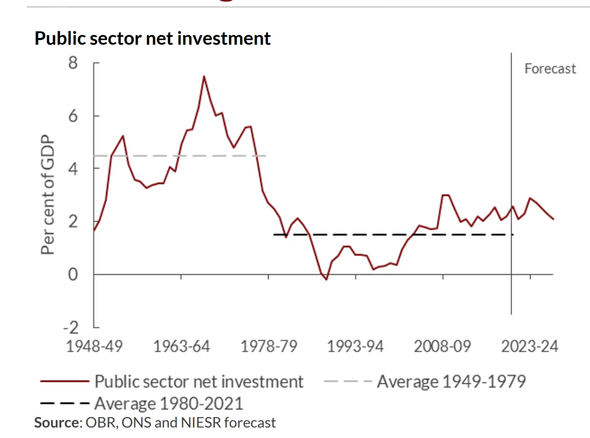
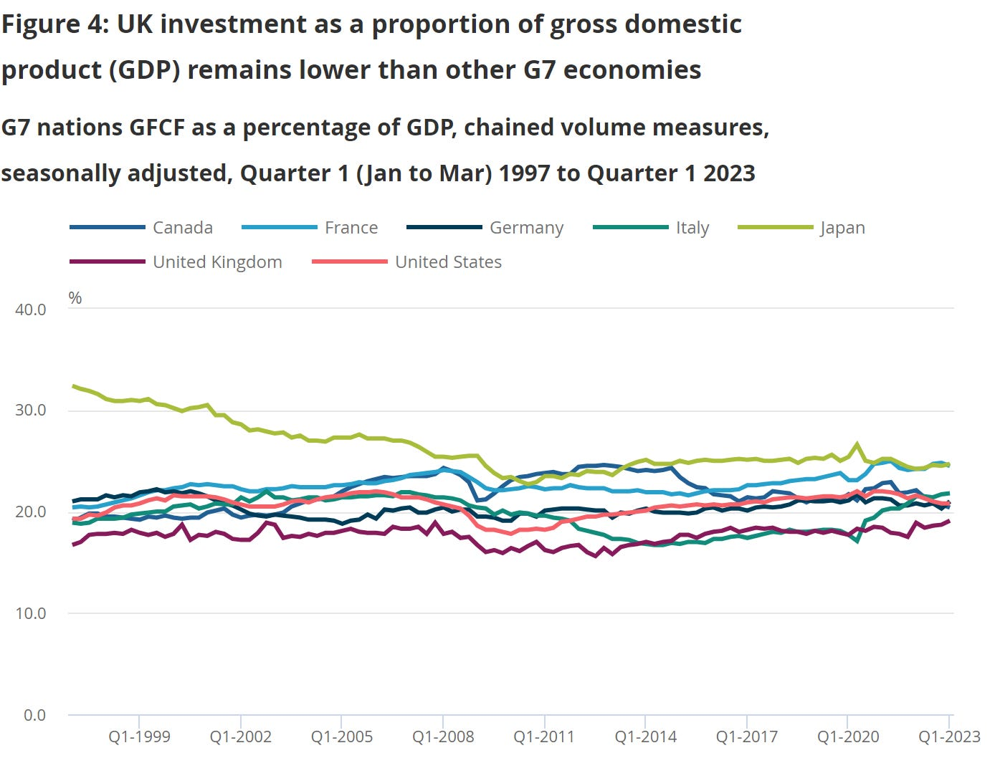
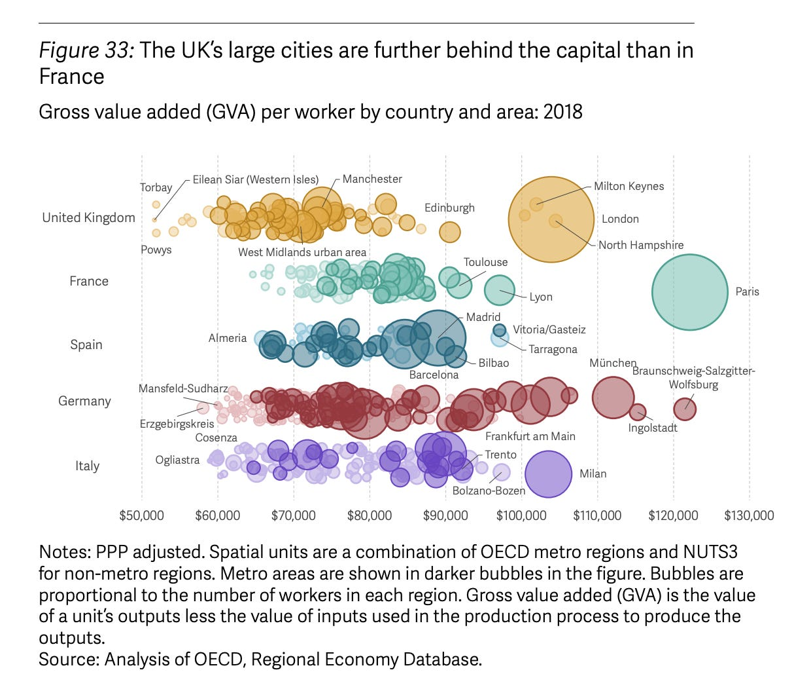
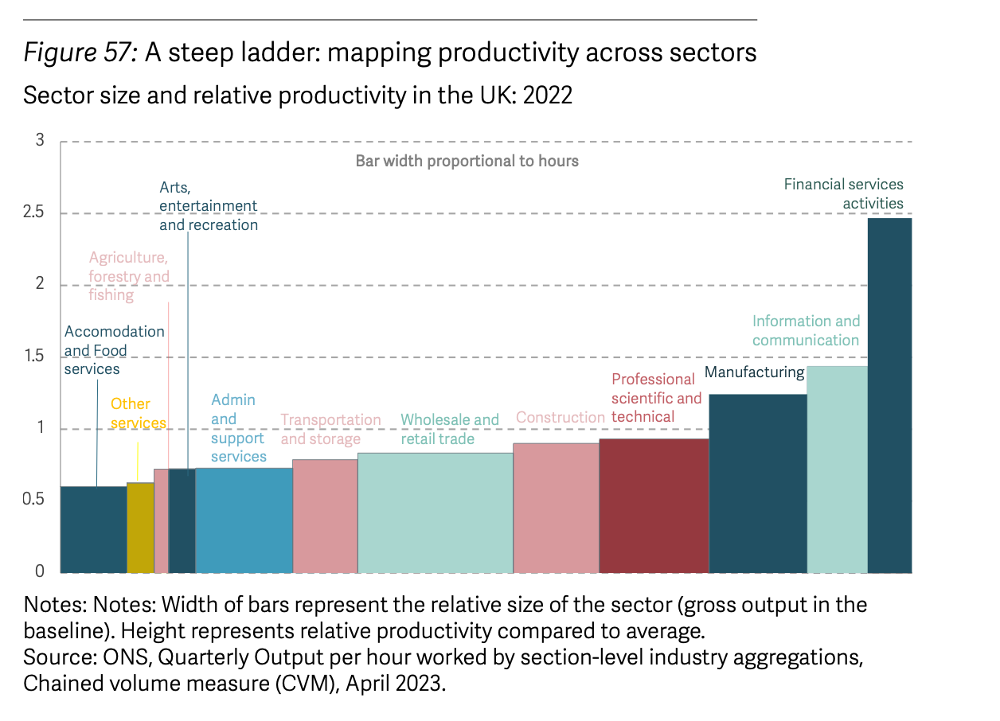

53 UK
Coppola
The collapse of public sector net investment under Thatcher is striking. It even briefly turned negative in the mid-1980s, as council houses and state assets were sold off. And although the Labour government of 1997-2010 did increase investment, the rise was small by historical standards and short-lived. Under the Coalition and Conservative governments, public investment has remained largely stuck at just under 2% of GDP.

53.1 Housing
High levels of public sector net investment in the 1950s and 60s were largely accounted for by an enormous social housebuilding programme. Under Margaret Thatcher, most of these properties were sold to the private sector. But they were not replaced.
My father, Frank Cooke, who as Chair of Housing on Bromley Council led that local authority’s flagship Right-to-Buy programme, castigated Thatcher for refusing to allow local authorities to reinvest the funds raised from council house sales in new social housebuilding. For him, Right-to-Buy was about enabling council tenants to own their own homes without having to move out of their homes, not about running down the social housing stock. But for the Conservatives in government, it was all about shrinking the size of the state. They genuinely believed that the private sector would be better at developing and running essential infrastructure and services than the state. Council houses were far from the only state assets they sold off.
By 1994, social housebuilding had all but ceased, and although housing associations did increase their housing stocks, it was nowhere near enough to replace the lost council homes. And private sector housebuilding didn’t take up the strain either. Since 1979, private sector housebuilding has been persistently lower than it was in the mid-1960s.
If there had been no population increase, the collapse of social housebuilding and the stagnation of private sector housebuilding might not have caused significant problems. But the same period has seen the population increase from around 50 million to over 67 million. This rise has not been evenly distributed over the country: cities have tended to grow faster than rural areas, and London and the South East faster than other regions. The combination of high population growth with inadequate housebuilding can have only one effect, namely to raise house prices. House prices have indeed soared.
During this period of rapid house price rise, house prices actually fell on two occasions: in the recession of 1990-1994, and again in the 2007-8 financial crisis. In 1990-94, over a million households experienced the miserable phenomenon known in the UK as “negative equity”, when the value of their houses fell so much that they were worth less than their mortgages. The fact that so many people were affected may have been because of the prevalence of so-called “endowment mortgages”, in which homeowners paid into a long-term savings policy instead of making monthly capital repayments. The savings policy was intended to generate sufficient capital to pay off the mortgage at the end of the term, usually with a bonus, but it meant that the mortgage balance did not reduce during its lifetime. Homeowners with endowment mortgages were thus more likely than homeowners with repayment mortgages to struggle to maintain mortgage payments when interest rates rose, and were also more likely to find themselves in negative equity.After a major mis-selling scandal in the 1990s left many homeowners with insufficient capital to repay their mortgages, endowment mortgages disappeared from the market. Today, interest-only mortgages are largely confined to the buy-to-let market, and linked savings products with unhedged interest rate risk and exorbitant fees are thankfully a thing of the past.
But negative equity is on its way back. NIESR forecasts a 6.5% fall in house prices over the next couple of years, and expects that as a result, about 166,000 households will find themselves in negative equity.
53.2 Investment
As a proportion of GDP, UK investment is the lowest in the G7 - and has been for a long time.

53.2.1 Crowding Out - Crowding In
Conservatives’ fervent belief in “shrinking the state” arises in part from an economic theory that says state spending “crowds out” private sector investment. According to this theory, cutting state spending should result in a private investment boom.
In the second half of the 1980s, the “crowding out” theory did appear to be true. After the 1986 financial sector reforms, there was an investment boom . But it was short-lived. By the late 1980s the economy was overheating and inflation was heading for the skies. When the Chancellor yanked up interest rates, there was a painful housing market crash and deep recession. It took over a decade for investment to reach pre-crash levels. That eventual increase was driven by the public sector. The sad truth is that when the public sector doesn’t invest, neither does the private sector.
NIESR argues that increasing public investment will “crowd in” private investment. And even if it doesn’t, the fiscal multipliers for public investment are so high that it is worth doing on its own terms anyway: NIESR estimates fiscal multipliers on public investment of 2-10% in the UK.
This is a radical departure from the economic orthodoxy that has largely determined government policy for the last forty years. And it raises more questions about what is taught to economics students. The economics profession has done much painful soul-searching since the 2008 financial crisis, but it seems it is not enough.
Despite the lack of evidence that public investment ever “crowded out” private investment in the UK, the Conservatives still believe that big tax and government spending cuts will encourage private sector investment. Liz Truss is still promoting her theories to anyone who will listen. And Jeremy Hunt is preparing to cut welfare benefits in real terms to create fiscal space for tax cuts in 2024, though this perhaps has more to do with trying to win an election than increasing private investment.
53.3 Foreign Owvership - weal performance
Tooze
London boasts world-class productivity and incomes to match. Much of the rest of Britain d
oes not. There is a strikingly large gap between London and Britain’s second cities, Birmi
ngham and Manchester. This is larger than the equivalent gap in France between Paris and a
city like Lille. As the report comments:

Birmingham is 14 per cent less productive than the UK overall, and has an employment rate
5 per cent below the national average, while even Greater Manchester, widely regarded as a
n economic success story, has productivity 12 per cent below the UK average.
Human capital formation is not encouraged by the fact that wages are low and the premium c
ommanded by graduates everywhere outside London has fallen, signalling that the local econ
omy cannot make particularly good use of high-skilled labour.
Put another way, highly skilled workers who might prefer to make lives for themselves and
their families outside the hot spots of London and the South East, face an increasing pena
lty for making that choice. Rather than convergence this will tend to drive deconvergence
within Britain itself.
If we ask why labour productivity is not higher, the obvious culprit is inadequate investment.
To put capital and labour to work productively requires good management. And though there are many British firms which are well run, the UK has a long tail of underperformance.
Assuming that owners are in general interested in maximizing returns, a long tail points to weak structures of corporate governance. What is particularly striking in the UK case is the extent of foreign ownership - foreign ownership of UK public firms rose from just over 10 per cent in 1990 to over 55 per cent in 2020 - and the extent to which firms lack a single controlling share owners, who would be in a position to oversee management strategy and reap the full rewards of success.
Corporate Britain isn’t very British and it lacks a model.
A largely unconstrained managerial class, who to judge by the data are doing a thoroughly mediocre job.
Given this state of affairs it is easy for those owning firms operating in Britain to imagine reallocating investment and work away from Britain. The negative consequences of the gratuitous self-amputation of Brexit fall particularly on the highest productivity sectors.
Reviving manufacturing is not going to save the British economy or provide the basis by itself for a more equitable reconstruction of British society.

Raising the minimum wage, which has been one of the success stories of recent policy, should be a priority.
20-30 percent of the population are heavily dependent on benefits,
The current Tory government and their predecessors are responsible for much of the mess the country is in and no better future for Britain can be built so long as they remain in power.
Starmer and his clique seem bent on betraying most things an intelligent progressive politics in Britain should be proud to stand for.
Cynical attempt to appeal to “Middle England”.